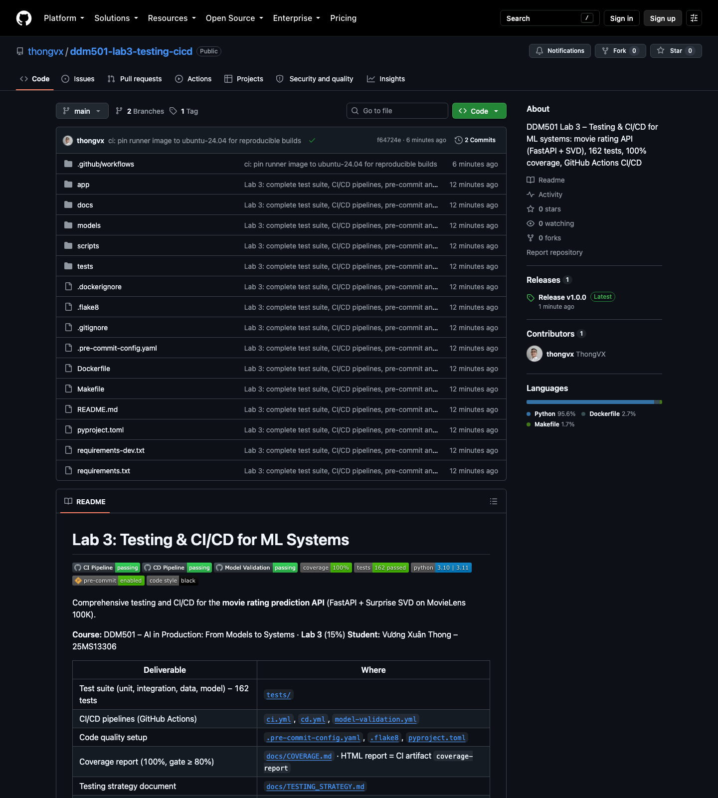
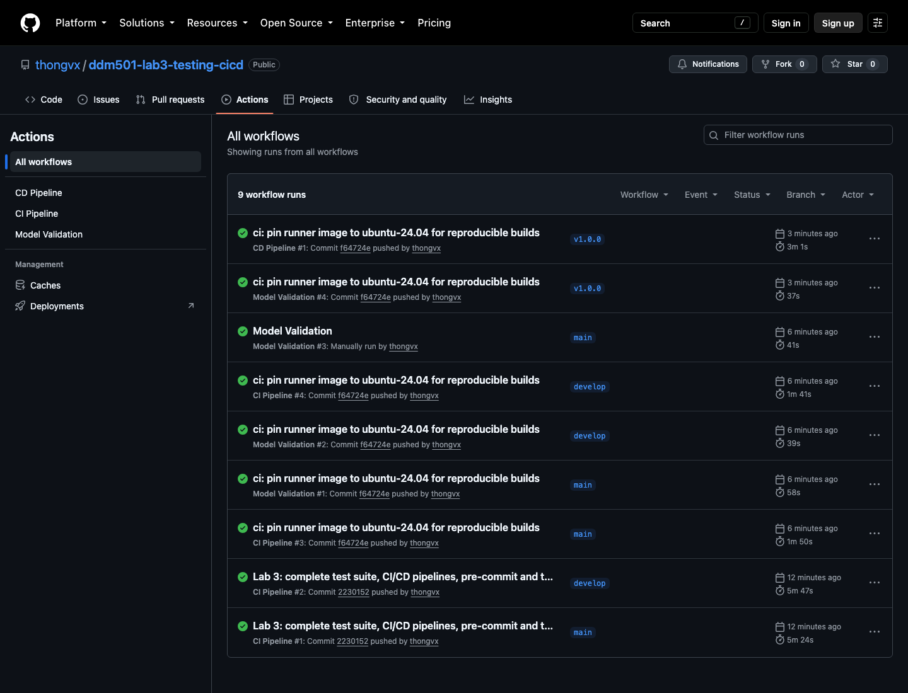
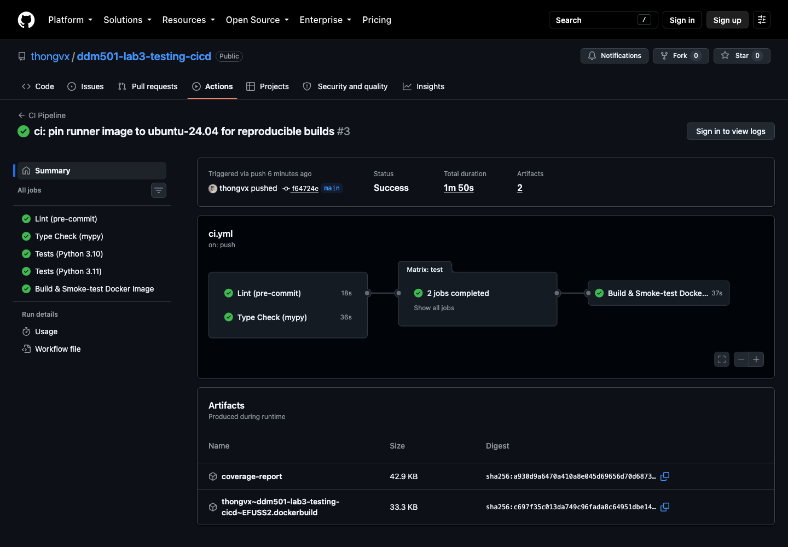
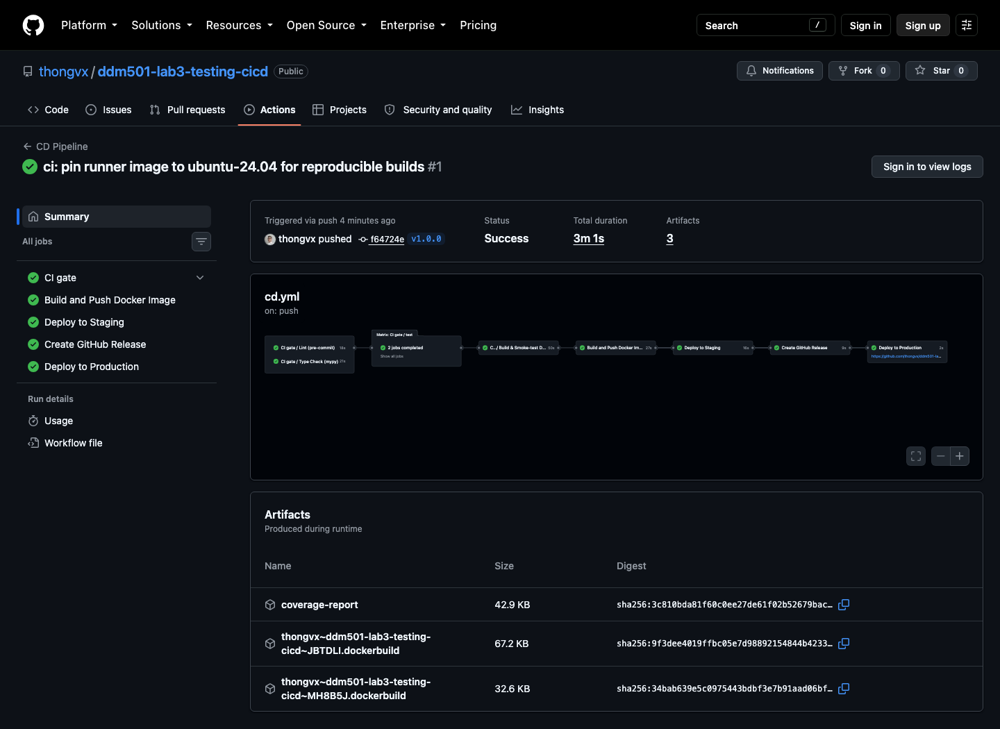
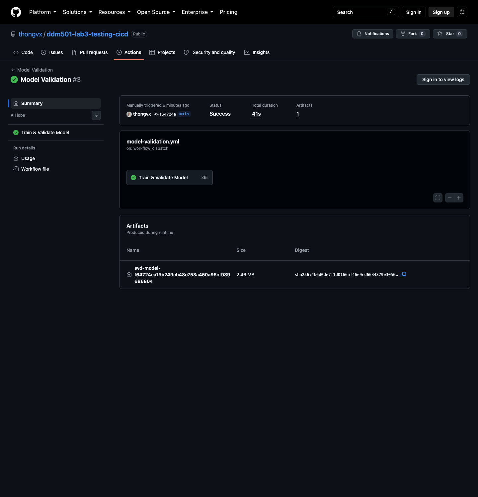
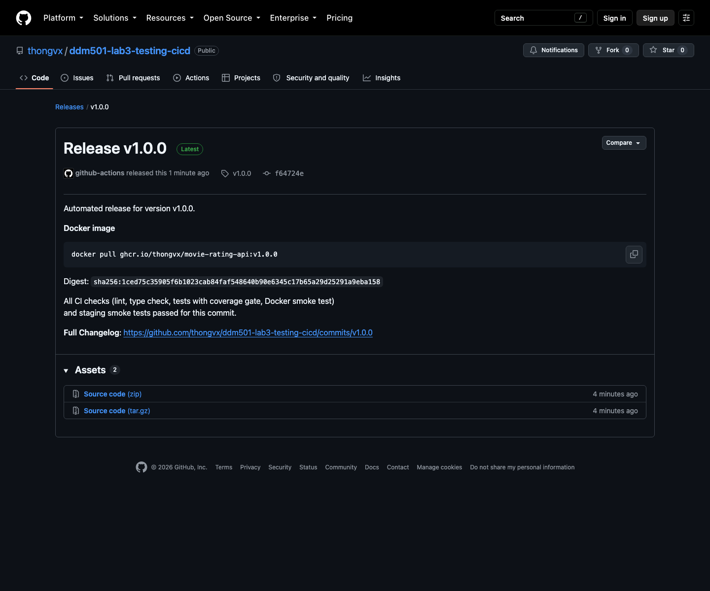
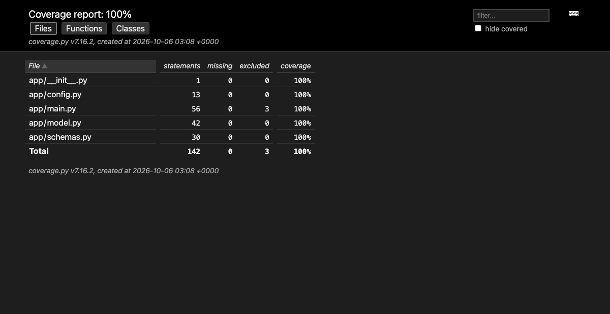

| Student | Vương Xuân Thong |
| Student ID | 25MS13306 |
| Repository | https://github.com/thongvx/ddm501-lab3-testing-cicd |
| CI status | https://github.com/thongvx/ddm501-lab3-testing-cicd/actions – all workflows passing |
| Release | v1.0.0 · image ghcr.io/thongvx/movie-rating-api:1.0.0 |
| Submission date | October 2026 |
| Criterion | Evidence | Status |
|---|---|---|
| Unit tests (10%) | 63 tests: model wrapper (real + isolated stub model), schemas, config, helpers – tests/unit/ | ✔ |
| Integration tests (8%) | 44 tests: all endpoints, 404/405/422/500/503, batch, CORS, latency – tests/integration/ | ✔ |
| Data tests (6%) | 32 tests: sample fixture + real MovieLens 100K data contract – tests/data/ | ✔ |
| Model behavioural tests (6%) | 23 tests: invariance, directional, minimum functionality, performance, robustness – tests/model/ | ✔ |
| CI workflow works (12%) | ci.yml: lint (pre-commit) · mypy → tests on Python 3.10 & 3.11 → Docker build + smoke test (Fig. 2–3) | ✔ |
| All checks pass (10%) | Every run green on main, develop and tag v1.0.0; badges "passing" (Fig. 1–2) | ✔ |
| CD workflow configured (8%) | cd.yml: CI gate → push to GHCR → staging smoke test → GitHub Release → production; plus model-validation.yml (Fig. 4–6) | ✔ |
| Pre-commit hooks (8%) | hygiene hooks, black, isort, flake8, mypy, local pytest hook; same hooks run in CI | ✔ |
| Linting passes (6%) | black, isort, flake8 – 0 issues (CI job "Lint") | ✔ |
| Type hints (6%) | all of app/ and scripts/ typed; mypy --disallow-untyped-defs 0 errors | ✔ |
| Testing strategy doc (10%) | docs/TESTING_STRATEGY.md (section 3 of this document) | ✔ |
| README updated (5%) | badges, structure, how to run/test/release, CI/CD table, screenshots, changes to starter | ✔ |
| Coverage report (5%) | 100% line coverage (minimum 80% enforced), HTML report artifact, docs/COVERAGE.md (Fig. 7) | ✔ |







Course: DDM501 – AI in Production · Lab 3: Testing & CI/CD for ML Systems Author: Vương Xuân Thong (25MS13306)
This document explains what we test, why, how the tests are organised, and how the CI/CD pipeline uses them as quality gates before code or a model reaches production.
| Component | File | Responsibility |
|---|---|---|
| Model wrapper | app/model.py |
Load the pickled Surprise SVD model, predict one pair or a batch, clip to 1–5 |
| API | app/main.py |
FastAPI app: /, /health, /predict, /predict/batch, /model/info; model loaded in lifespan |
| Schemas | app/schemas.py |
Pydantic v2 request/response contracts (ID length 1–50, rating 1–5, batch 1–100) |
| Config | app/config.py |
Paths, versions and server settings, overridable via environment variables |
| Training | scripts/train_model.py |
MovieLens 100K → SVD (seed 42); writes models/svd_model.pkl + hold-out metrics.json |
| Model gate | scripts/validate_model.py |
Fails if the model does not load, predicts outside 1–5, or misses RMSE/MAE thresholds |
| Risk in an ML service | Example failure | Guarded by |
|---|---|---|
| Code regressions | refactor breaks clipping or batch order | unit tests |
| Broken API contract | field renamed, wrong status code, internals leaked in errors | integration tests |
| Bad training data | duplicated ratings, ratings outside 1–5, missing IDs | data tests |
| Silently degraded model | model predicts the mean for everyone; worse than baseline | behavioural tests + model gate |
| Environment drift | dependency cannot be installed, image does not start | CI on Python 3.10/3.11, Docker smoke test |
| Unsafe release | untested tag shipped to production | CD re-runs CI, staging smoke test before release |
▲ System / E2E Docker smoke tests (CI) + staging smoke tests (CD)
▲▲▲ Model behaviour 23 tests – invariance, directional, MFT, performance, robustness
▲▲▲▲▲ Data quality 32 tests – schema, ranges, completeness, uniqueness, distribution
▲▲▲▲▲▲▲▲ Integration 44 tests – every endpoint, validation, error paths, latency
▲▲▲▲▲▲▲▲▲▲▲▲ Unit 63 tests – model wrapper, schemas, config, helpers
Total: 162 tests, 100% line coverage of app/ (gate: ≥ 80%). The full suite runs in about 2 s
once the model is trained, so there is no reason to skip it locally.
tests/unit/ (63)| File | Classes | What is verified |
|---|---|---|
test_model.py |
TestMovieRatingModel (14) |
load, return type float, 2-decimal rounding, 1–5 range, batch type/length/range/empty, is_loaded, None/empty IDs |
TestModelWithStub (7) |
isolated tests with a stub model pickled to tmp_path: clipping above 5 and below 1, rounding, order, RuntimeError when unloaded, TypeError for non-string IDs |
|
TestModelFileHandling (3), TestModelSingleton (1) |
missing / corrupt file, stored path, get_model() singleton and reset_model() |
|
test_schemas.py |
5 classes (32) | required fields, empty / whitespace / None, stripping, 50-char limit and boundary, no int→str coercion, rating bounds 1.0/5.0, batch 1–100 and boundaries, nested validation |
test_utils.py |
TestConfig (4), TestMainHelpers (2) |
env-var overrides, defaults, 503 helper, startup failure leaves API alive but unhealthy |
The stub-model tests make the unit layer independent of training and cover branches the real model never reaches (e.g. a raw estimate of 7.3 must be clipped to 5.0).
tests/integration/test_api.py (44)The FastAPI app is exercised through TestClient inside a with block, so the lifespan handler
loads the real model exactly as in production (the starter's bare TestClient(app) skipped startup and
every /predict returned 503).
model_version, OpenAPI schema.detail.GET /predict, POST /health), 503 when the model is missing
(also /health → unhealthy), 500 when prediction raises – and the internal exception text is
not leaked to the client. CORS header present./predict through the HTTP stack < 50 ms.tests/data/test_data_quality.py (32)Two data sources:
sample_ratings (fixture) – the lab's required checks: range, negatives, maximum, missing IDs,
ID types, nulls/NaN, required fields, mean 2.0–4.5, 0 < std < 2.0, distinct values, unique
(user, movie) pairs, multiple users/movies, numeric types.TestDataValidationCatchesBadData feeds corrupted records to the rules to prove the checks can fail
(a test that can never fail protects nothing).
tests/model/test_model_behavior.py (23)Following the CheckList methodology:
| Type | Tests |
|---|---|
| Invariance | same input → same output (×2, ×5); batch order does not change per-pair results; batch = individual; a pair's score does not depend on its batch neighbours |
| Directional | different users / movies → different predictions; for > 100 users who gave both 5★ and 1★, the 5★ movie is predicted higher in ≥ 95% of cases; for a new user, acclaimed movies (A Close Shave, Schindler's List, The Wrong Trousers) score above poorly rated ones |
| Minimum functionality | known users predicted in range; predictions not all identical; unknown users / movies get a valid fallback; unknown user + movie → global mean (≈ 3.53) |
| Performance | MAE < 1.0 on 1 000 real ratings; no error > 3.0 on known pairs; hold-out RMSE < 0.95 and MAE < 0.75; better than the global-mean baseline |
| Robustness | numeric strings, leading zeros ("001" is a different, unknown user – documented), Unicode and 500-char IDs |
Why "≥ 80% within 1.5 stars" instead of "every pair within 1.5": the starter suggested every known
pair should be within 1.5 stars. User 166 rated movie 346 one star, but SVD predicts ≈ 2.8 because
it regularises towards user and item means. Loosening the tolerance until it passes would hide
information, so the test asserts what a good collaborative-filtering model can actually guarantee
(most pairs close, none absurd) and the real accuracy requirement is moved to a proper hold-out set
(test_holdout_metrics_meet_thresholds).
docker job: builds the multi-stage image, runs it, checks /health reports
model_loaded: true, a valid /predict, a 422 for a bad request, and waits for Docker's own
HEALTHCHECK to report healthy.deploy-staging job: pulls the image that was just pushed (by digest), runs it and smoke-tests
/health, /predict, /predict/batch, /model/info before a release is created.All shared fixtures live in tests/conftest.py:
| Fixture | Scope | Purpose |
|---|---|---|
test_client |
session | TestClient with lifespan → real model loaded once |
trained_model |
session | MovieRatingModel(); skips with a clear message if not trained |
model_metrics |
session | hold-out metrics from models/metrics.json |
movielens_ratings |
session | the 100 000 real ratings (skips if the dataset is not downloaded) |
sample_*, invalid_prediction_requests, known_user_movie_pairs, unknown_users/movies |
function | small deterministic inputs |
Determinism: the model is trained with random_state=42, samples use random.Random(seed), so the
suite gives identical results on every run and platform.
push / PR ─► Lint (pre-commit: black, isort, flake8, mypy, hygiene) ─┐
─► Type check (mypy, disallow-untyped-defs) ───────────────┤
▼
Tests on Python 3.10 & 3.11: train ► model gate ► 162 tests ► coverage ≥ 80%
▼
Docker: build multi-stage image ► smoke test ► HEALTHCHECK healthy
tag v* ─► CI (reused) ► build & push GHCR ► staging smoke test ► GitHub Release ► production
model/script/dependency change, weekly ─► Model Validation: 5-fold CV ► RMSE ≤ 0.95, MAE ≤ 0.75
| Gate | Threshold | Where |
|---|---|---|
| Formatting / lint | black, isort, flake8 clean | pre-commit hook + CI lint |
| Types | mypy, no untyped defs in app/, scripts/ |
pre-commit + CI type-check |
| Tests | 162/162 pass on 3.10 and 3.11 | CI test |
| Coverage | ≥ 80% (--cov-fail-under=80, fail_under in pyproject.toml) |
CI test |
| Model quality | hold-out RMSE ≤ 0.95, MAE ≤ 0.75 | CI test, Model Validation workflow |
| Runtime | container healthy, endpoints respond | CI docker, CD deploy-staging |
pip install -r requirements.txt -r requirements-dev.txt
python scripts/train_model.py # once: downloads MovieLens 100K, trains, writes metrics
pytest tests/ --cov=app --cov-report=html # full suite + HTML report in htmlcov/
pytest tests/unit/ -v # one layer
pytest -m integration # by marker
pre-commit run --all-files # everything CI's lint job runs
mutmut) to measure test strength beyond line coverage.Line coverage of app/: 100% (162 tests passed) · CI gate: --cov-fail-under=80 and
fail_under = 80 in pyproject.toml.
| Name | Stmts | Miss | Cover | Missing |
|---|---|---|---|---|
| app/__init__.py | 1 | 0 | 100% | |
| app/config.py | 13 | 0 | 100% | |
| app/main.py | 56 | 0 | 100% | |
| app/model.py | 42 | 0 | 100% | |
| app/schemas.py | 30 | 0 | 100% | |
| TOTAL | 142 | 0 | 100% |
Generated with:
python scripts/train_model.py --skip-cv
pytest tests/ --cov=app --cov-report=term-missing --cov-report=html --cov-fail-under=80
htmlcov/), coverage.xml and junit.xml as the artifact
coverage-report (Actions → CI Pipeline → run → Artifacts).if __name__ == "__main__": in app/main.py (local dev server entry point).